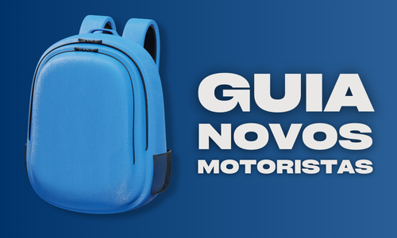
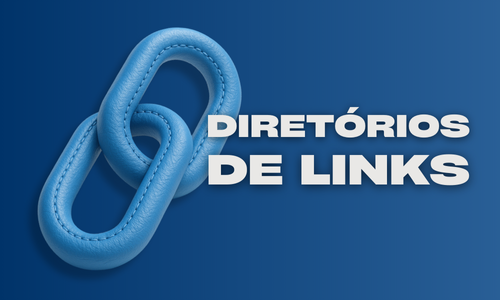
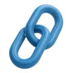
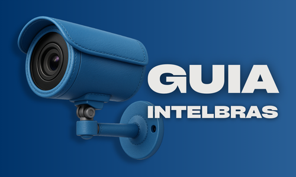
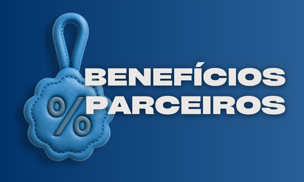
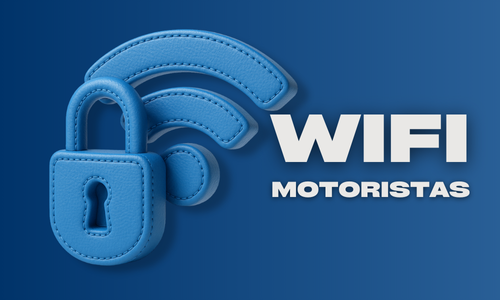

Portal do Motorista
Guia de Jornada
Avisos, procedimentos e serviços para a sua rotina.
Mural de avisos
-
Cuidado com ruas alagadas
A previsão do tempo indica chuva nos próximos dias. Não entre em ruas alagadas e escolha um caminho alternativo. Em caso de dúvida, fale com o Tráfego.
-
Ver procedimentos
Siga os procedimentos em caso de acidente
Se houver um sinistro, garanta a segurança do local e acione o SAMU quando houver feridos. Depois, siga o passo a passo para registrar a ocorrência.
8 conteúdos
-


Guia para novos motoristas
Cadastro no Telegram e bot de rotas.
-

Em caso de sinistro
Como agir e registrar um acidente.
-
Nossas regras
Cuidados com o veículo e os passageiros.
-


Diretório de links
Formulários e sistemas da operação.
-

Guia Intelbras
Rotas, embarque e cartão de acesso.
-


Benefícios e parceiros
Descontos e condições dos parceiros.
-


Wi-Fi dos motoristas
Rede, senha e QR Code da unidade.
-

Bonificação
Em revisão